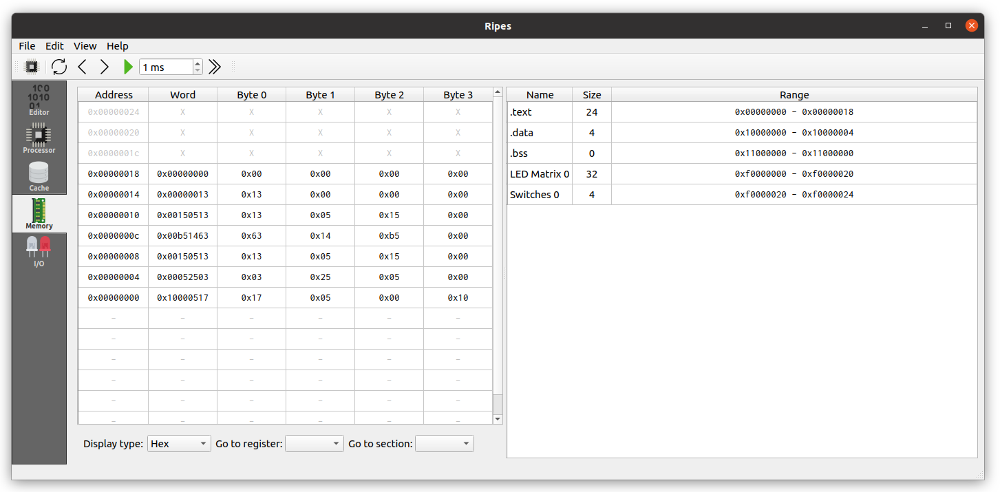

แท็บ Memory
หน้าจอที่ใช้สำรวจ address space ทั้งหมดของ CPU — เห็นทั้ง code segment, data segment และค่าที่โปรแกรมเขียนไว้ในหน่วยความจำ

วิธีอ่านตาราง Memory
แท็บ Memory แสดงค่าในหน่วยความจำเป็นตาราง โดยแต่ละแถวคือ 1 word (4 bytes) ของหน่วยความจำ คอลัมน์ที่สำคัญ:
- Address — ที่อยู่ของ word นั้น (แสดงเป็น hex)
- Value — ค่าที่เก็บอยู่ ปรับเลขฐานการแสดงผลได้
วิธีนำทางในหน่วยความจำ
หน่วยความจำมีขนาดใหญ่ การ scroll หา address ที่ต้องการอาจใช้เวลานาน Ripes จึงมีปุ่มช่วยนำทาง:
- Scrolling — เลื่อนขึ้นลงเพื่อดูพื้นที่ใกล้เคียง
- Go to register — กระโดดไปยัง address ที่เก็บอยู่ใน register ที่เลือก เหมาะมากเมื่อต้องการดู array ที่ pointer ใน
a0หรือspชี้อยู่ - Go to section — กระโดดไปยังจุดเริ่มต้นของ segment ต่าง ๆ ในโปรแกรม
.text— Code segment (คำสั่งของโปรแกรม).data— Static data (ตัวแปร global ที่มีค่าเริ่มต้น).bss— Uninitialized static data- Address... — กระโดดไปยัง address ที่ระบุเอง
การ Reset และผลต่อหน่วยความจำ
ข้อควรระวัง
เมื่อกดปุ่ม Reset ใน toolbar — หน่วยความจำที่โปรแกรมเขียนระหว่างการรันจะถูกล้างกลับสู่ค่าเริ่มต้น ค่าใน
.data segment จะกลับเป็นค่าที่ประกาศไว้ในโค้ด
เทคนิคการ Debug ผ่านแท็บ Memory
แท็บ Memory เป็นเครื่องมือ debug ที่ทรงพลังมาก ตัวอย่างการใช้:
- เมื่อโปรแกรมมีตัวแปร global อยู่ใน
.data— ใช้ Go to section → .data เพื่อดูว่าค่าถูกอัปเดตตรงตามที่คาดหวังหรือไม่ - เมื่อโปรแกรมใช้ stack (เช่นเรียก function) — ใช้ Go to register → sp เพื่อดูค่าใน stack frame ปัจจุบัน
- เมื่อโปรแกรมจัดการ array — โหลด address เริ่มต้นของ array ใน register แล้วใช้ Go to register เพื่อดูข้อมูล array ทั้งก้อน
ตัวอย่างการอ่าน .text segment
หากโหลดโปรแกรม factorial และไปยัง .text segment คุณจะเห็น:
Address Value (hex) Instruction
0x00000000 0x00002517 lw a0, 0x2(zero) ; lw a0, argument
0x00000004 0x008000ef jal ra, 8 ; jal ra, fact
...โดยแต่ละ 4 bytes คือ 1 คำสั่ง 32-bit ตามสถาปัตยกรรม RV32I
เปรียบเทียบกับแท็บ Editor
ฝั่งขวาของแท็บ Editor (program viewer) ก็แสดงข้อมูลส่วน
.text แต่ในรูปแบบที่อ่านง่ายกว่า แท็บ Memory เหมาะกับการดูข้อมูลใน .data และ stack มากกว่า